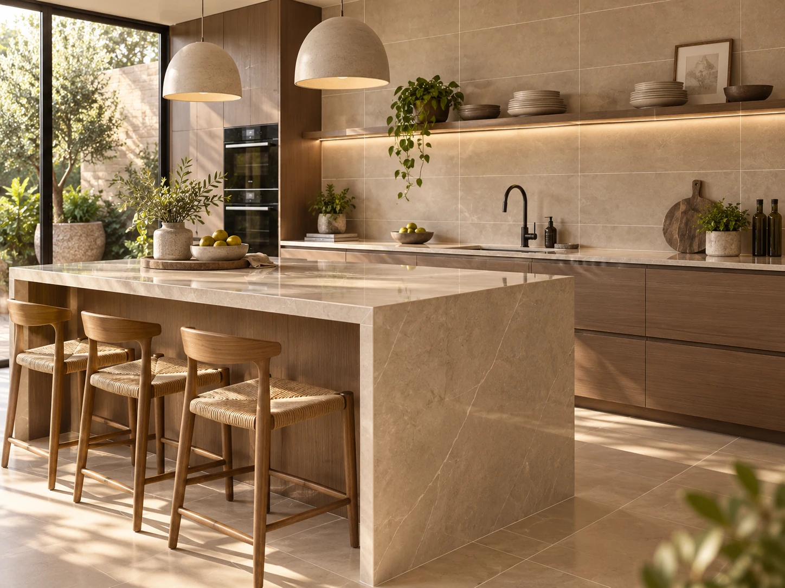
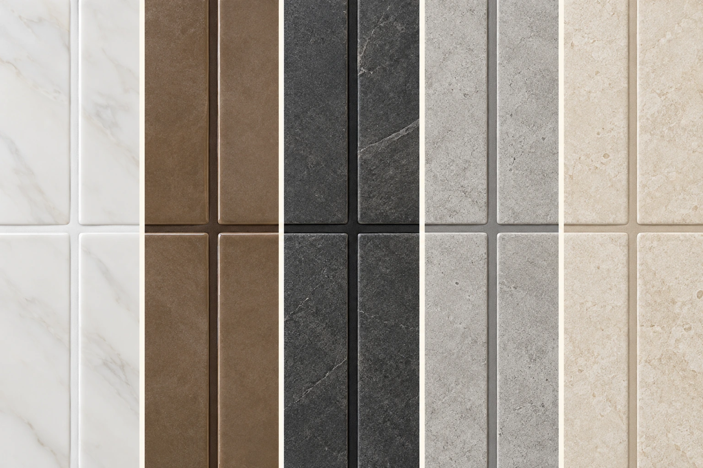
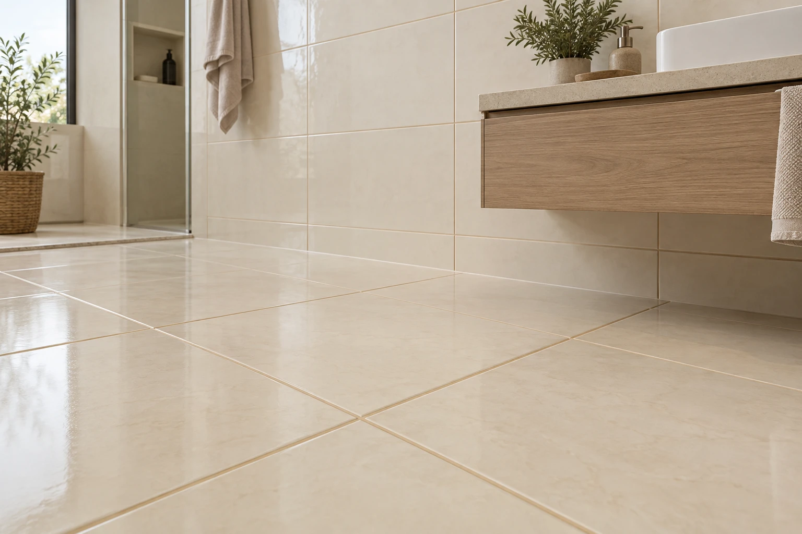
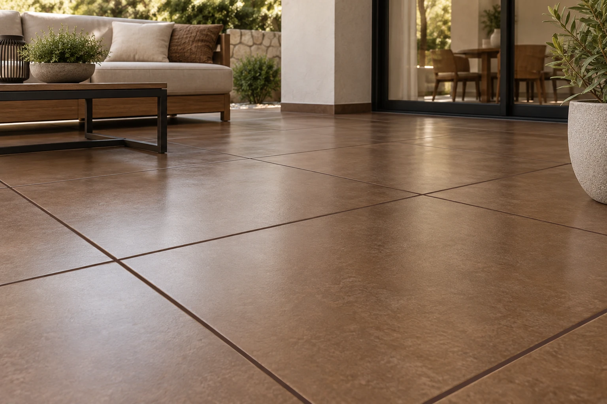

Evaluación
Revisamos el soporte y la necesidad.

BOQUILLA MÁGICA KAEMENTO
Boquilla Mágica KAEMENTO.
Volver a estrenar empieza entre tus baldosas.
Con KAEMENTO está todo resuelto.

LA BOQUILLA HACE LA DIFERENCIA.
Elige un ambiente y prueba nuestros cinco tonos. Compara cómo cambia el espacio al renovar únicamente sus juntas.
 AntesJuntas renovadas
AntesJuntas renovadasAntesDesliza sobre la imagen para comparar ↔Renovado
Tu elección: Extra blanca
Elegir Extra blanca para mi kit ↗Kit de 1 kg con espátula y microfibra. Para piscinas y jacuzzis, confirma con KAEMENTO el curado y la protección para inmersión.Elige un tono para visualizar tus juntas renovadas.
SOLUCIÓN KAEMENTO
Formulada con base en microcemento, aditivos y polímeros. Puede aplicarse sobre boquillas existentes en buen estado, reduce reprocesos y desarrolla alta dureza una vez seca.
CONOCE EL PRODUCTO
Consulta las etiquetas finales del kit de 1 kg. Pulsa cada imagen para ampliarla; también puedes descargar los PDF de 13 × 8 cm.


Etiquetas del kit de 1 kg. Consulta con KAEMENTO la dosificación, el curado y las condiciones de uso antes de aplicar. Los tonos en pantalla son orientativos.

INSPIRACIÓN KAEMENTO
Una combinación armónica de enchapes y juntas para cocinas de apariencia limpia y cuidada.
Visualización conceptual del uso del sistema.PASO A PASO
Revisamos el soporte y la necesidad.
Acondicionamos la superficie.
Ejecutamos el sistema especificado.
Finalizamos y verificamos el desempeño.
BOQUILLA MÁGICA · CINCO COLORES
Cinco combinaciones de boquilla y tableta para visualizar un acabado armónico, con juntas lisas y uniformes.

Collage ilustrativo generado con IA. Los tonos en pantalla son orientativos; confirme el color con una muestra física. Pulse la imagen para ampliar.

Juntas beige que acompañan la calidez de la tableta clara.
Pulse la imagen para ampliar ↗
Una combinación de tonos cálidos con juntas definidas y uniformes.
Pulse la imagen para ampliar ↗INFORMACIÓN CLAVE
Producto en polvo para preparar según la ficha técnica.
Herramientas incluidas para aplicar y retirar el exceso.
Acompañamiento técnico KAEMENTO.
No recomendamos seleccionar una capa o producto de forma aislada sin revisar el soporte y el uso final. La preparación, dosificación, aplicación y curado forman parte del desempeño.
PREGUNTAS FRECUENTES
Puede aplicarse sobre boquillas existentes en buen estado. Primero se revisan su estabilidad, limpieza y compatibilidad; las zonas sueltas o deterioradas requieren preparación.
Extra blanca, Chocolate, Negra, Gris y Beige. El color debe elegirse en relación con la tableta y el acabado buscado.
En superficies muy porosas hay riesgo de manchado por la adherencia del producto. Consulta la compatibilidad y realiza una prueba antes de intervenir toda el área.
ASESORÍA KAEMENTO